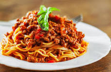

🍲 My Favorite Recipe
Recipe: Spaghetti Jollof

Ingredients
- Spaghetti – 500g
- Tomatoes – 5 medium
- Red bell peppers – 2
- Onions – 2
- Garlic – 2 cloves
- Vegetable oil – 3 tbsp
- Salt – to taste
- Seasoning cubes – 2
- Water – as needed
Instructions
- Boil water and cook spaghetti until slightly tender. Drain and set aside.
- Blend tomatoes, peppers, onions, and garlic into a smooth paste.
- Heat oil in a pot and fry the blended mix for 10 minutes.
- Add seasoning and salt, then stir well.
- Add the cooked spaghetti into the sauce and mix until coated.
- Let it cook on low heat for another 5 minutes.
- Serve hot and enjoy!

Notes
You can add chicken, fish, or vegetables to make it richer.